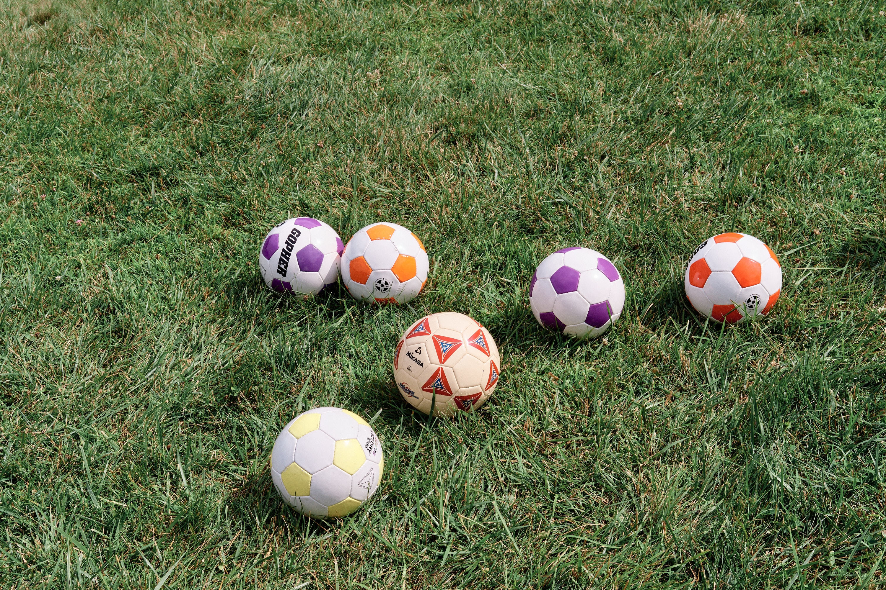
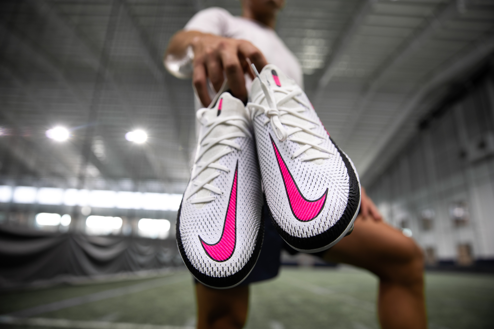
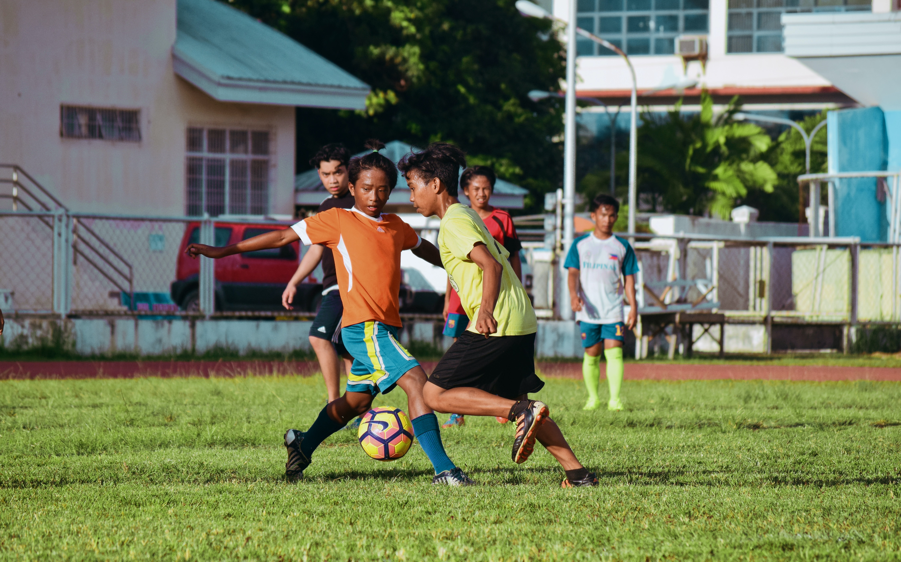

checkout our products!

Photo by Colin Czerwinski on Unsplash

Photo by Philip Blystone on Unsplash

Photo by Jeffrey F Lin on Unsplash

Photo by Virgil Cayasa on Unsplash
what our clients are probably thinking lets explain...
Senior League soccer players typically represent the highest age group among these three divisions, often ranging from 16-19 years old. These players are usually more experienced and have honed their skills over several years of playing the sport. They often participate in more competitive and organized leagues, aiming to showcase their talent for college or professional opportunities. john smith